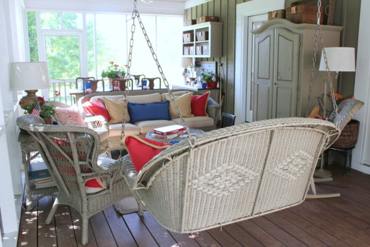

.PNG)
.PNG)
.PNG)
.PNG)
.PNG)
.JPG)
.JPG)
.PNG)
.PNG)


.jpg)
After a day of scorching heat, it rained yesterday evening…a  heavy rain.  When it started I decided to sit out on the porch to listen to and smell that rain. Isn’t that just one of the best scents around?! … earthy and sweet.  I love to swing on that porch swing when it is raining.

Well after a few minutes of the downpour, the trees started swaying..and then more… and more until I could see leaves and debris begin flying in the air! Â It was blowing enough to open and slam those screen doors over and over again. Â The umbrellas on the deck looked ready for take off.
.jpg)
So I smartly decided to hop off that swing and get myself back in the kitchen! Â The storm quickly moved on, but this morning our yard wears the aftereffects…limbs down, pine cones thrown all about, leaves everywhere. But I am super thankful for the rain. Our yard needed it badly! And it was nothing like the folks in Texas and Oklahoma have had to endure in the past few days. Â My heart goes out to them.
 This morning is sunny (and already 80°) so we can enjoy a little time out there.  (I did have to wipe the water off the table because that wind and rain decided to baptize it! 🙂 )
This morning is sunny (and already 80°) so we can enjoy a little time out there.  (I did have to wipe the water off the table because that wind and rain decided to baptize it! 🙂 )
Did you notice the basket of yard games a couple of photos up?  The fun and games theme continues out here. (Of course it is most appropriate here, because this is where we grab them.) Over by the buffet table you can find the shuffleboard pieces –tangs and biscuits in case you didn’t know the terms. (You just never know what you can learn here! Right? 🙂 )
The now dry table has its red, white, and blue full on today.
The blue buckets were marked way down at Michaels, so I grabbed up a few.  Our local Kroger has those melamine gingham plates in red, blue, and yellow.  One of my sweet readers wrote to tell me that I needed to buy them. 🙂  I finally decided the blue ones were the best for our summer table, so I finally purchased some a week ago.
And of course I could not resist those red gingham napkins with the cute hem stitching from Pier 1. Â (You know those babies will get some use around here!) Â The centerpiece is the huge At Home With Marieke bowl from HomeGoods filled with geraniums and a few flags. Â I hope when our brand new HomeGoods opens in August, they will have some of the pieces from that line. Â (It has been discontinued…boo hoo.)
The chalkboard finishes out the summer theme with its list of games. Â I know all of them are not necessarily only summer games, but they are games we do play in the summer.
Cards and frisbees ready for play. 🙂
And now let’s go inside again. Â I wanted you to see two more rooms. Â First, our daughter’s room already has red all year round, but I did add a spot of fun and games on her dresser.
Badminton anyone? 🙂
In part 1 of our tour, I promised to share my workroom with you. Â So come on in.
I’m afraid I abandoned the fun and games theme in here.  I am dying to go to the beach so I went beachy with the decor.
The craft supplies are gone from the jars, and shells are in their place.
And I pulled out one of my big model boats for the cabinet below the window. I used to have a huge collection of them when we first built the house. (You can read about its nautical style here,) But I have sold off most of them in yard sales over the years.
I’m afraid that brings us to the end of the tour.  I hope you have enjoyed it because I have enjoyed sharing all the rooms with you! 🙂 With all the red that is in this house year round, it is pretty easy to add in accents each season.  Thank you so much for stopping by!
Until next time…


.PNG)
Do you store all of your decorations in your attic? Do you have a system? I’d love to see how you store everything when you’re not using it and how you approach decorating each season. I love, love, love the “after” pictures, but I think it would be fun to see the “during.” 🙂
i enjoyed your summer home tour, when may I visit? Oops, was that too forward?
You’ve probably said before but what is the source for the red lidded jars? Uh, I ❤️ those way too much.
Kelly-
I have just stumbled upon your page and I am in awe… You must be exhausted. I cannot say enough great things about your decorating and your ideas. I bet your classroom was marvelously decorated and organized as well. And your students just as blessed to have such a creative teacher! Congrats on your retirement… Enjoy!
Lovely as always. I shall have to look for a badminton set. I used to love to play in my younger days.
I wanted to invite you to stop by the Decor To Adore blog as I am currently hosting a giveaway for my treasured readers.
Have a beautiful day!
One of my favorite things to do is sit on the porch when it rains, and your porch is so lovely, I may never get up!;) Question, how do you care for all your plants? I’m most curious about the wall basket planters? Love it all, you have such a gift, thanks for sharing!
Another fun post! I have been wanting one of those huge jacks forever. Next time I see one I am breaking over and buying it. (I used to be the “jack rock queen”. My sister and I would play jacks to see who had to wash the dinner dishes. I mostly won and rarely washed dishes.) And, I am also going to find a Kroger! You have the cutest things from there! You obviously use a chalk marker for writing on the porch chalkboard. What kind of marker do you use that you don’t have to repaint that board after using a chalk marker? Or do you repaint? You are a wonder woman! I read all of the comments from everyone. I love the idea of those huge storage containers labeled by the months. (When my daughter buys a house and takes her things and I reclaim the attic, I hope I can remember that idea.)
Kelly, every one of your posts is such a source of inspiration for me. Whenever I’m stuck on what to do in a little vignette around the house, I look up your past posts & always find something that sparks the perfect idea. 🙂
Hi Kelly, Wow, that was some storm. I love listening to the rain as well and even a good storm is exciting as long as it doesn’t cause any damage. Glad it was just some minor things in the yard. It seems like here in Michigan it has been raining a lot. The yard is nice and green and the garden is happy. Your home is beautiful. Love all your summer touches. I had my eye on those cute plates at our Kroger just today. They are so cute. I love your table setting and that huge bowl is awesome. It caught my eye in your previous post. I have been enjoying your summer house tour. Thanks and have a great weekend!
I don’t know which is more tortuous, the throwback to your 2012 post of the inn on Amelia Island or drooling as I always do, over your porch. I giggle, as I too went through a nautical period, I kid you not. In the late 80’s our family room sported a blue and white awning striped sofa and side chair. Blue carpet, white walls and a fireplace mantel adorned with a sailboat. Truth! I also just said to my husband this last week, as your daughter did to you, “All we need is our property to be lakeside”. I love our home, but there is something so calming and serene about hearing the waves, sitting on a pier, boating or gazing out at vast water… sigh!
I am loving this game theme. I need to go buy some games and get the party started! We got a good thunderstorm yesterday,too. I started to put our ferns down on the ground to get some of the good rain, but noticed a bird’s nest with 4 eggs in it. Poor things got blown around pretty good, but all is well.
Loved the rest of your tour! 🙂 I could “smell” the rain when you described it. Thankfully, we have gotten a reprieve from this oppressive heat (I’m sure not as hot as yours!) today here in Virginia. It has been overcast and stormy. I’ve quite enjoyed it. 🙂
———————————————————————
Thank you Gina! I’m so glad the writing could help with your mental image of rain. 🙂 And I am glad you have had a break in the heat. We have not been so lucky.I can understand why you enjoyed the rainstorm. 🙂
Kelly
Those storms have been crazy bad! We got hail & very high winds w/ lots of trees & limbs down, but I’m beyond thankful for the rain! I’m so glad that you got the gingham plates! They look cute as can be on your table. I love your fun & games/ red & blue theme for the summer. I’m switching out my “lemon theme” on my hutch this weekend. Summer is here & I’m ready for red, white & blue. Hope you have a wonderful weekend, and try to stay cool!
———————————————————————-
Yes, they have! I am sorry you have had the same damaging winds there. Hope it wasn’t a lot to clean up there. Yes, the gingham plates were needed. 🙂 What color did you buy? Have fun decorating for the summer season this weekend!
You stay cool too!
Kelly
Beautiful! You are so creative!
——————————————————————–
Thank you so much Barbie!
Kelly
Kelly,
Your home looks beautiful and fresh and ready for summer fun. I love the table setting on the porch. All of the components just say summer to me.
Great tour, thank you.
xo,
Karen
——————————————————————-
Karen, glad you liked the porch and all its red, white, and blue things. Our daughter says that all it needs is a lake to be looking out at. 🙂 Wish we did have one of those!
I hope you and all your family celebrate a wonderful Father’s Day this weekend!
Kelly
Everything you do in your house is always so classic, fresh and lovely! I could stare at each of your rooms for hours on end!
I saw an HGTV show yesterday where the woman was looking at a house for sale that had gorgeous buffalo checked curtains hanging in the window. She brashly said she HATED those UGLY curtains – and I knew right away she and I would have nothing in common.
I have a feeling that after she bought the house, she hung curtains with a beer-can print or the logo from her favorite pro-football team. Really now. I swannee!
——————————————————————–
Thank you for your wonderful compliments Leslie Anne! You are too kind. That is too funny about the buffalo check curtains! 🙂 I know I wouldn’t have anything in common with her either!
Kelly
Kelly – I was very excited to see your whole house decorated for summer. As usual I love it!!!! Do you know the brand of the gingham plates you bought from Kroger? Unfortunately I don’t have a Kroger near me so I am wondering if I can find the brand somewhere else online. Thanks again for sharing your BEAUTIFUL home! Have a great weekend! Sarah
———————————————————————–
Thank you for the compliments on the house Sarah. 🙂 I am so glad you like it! Unfortunately, the back of the plate does not have the manufacturer’s name on it, but I do think it was on the label I peeled off with the price tag. I will look the next time I am in Kroger to see what it says and let you know.
You have a great weekend too!
Kelly
This was so much fun, I hated when the tour ended. You had me at hello with the beautiful Marieke bowl, such a great centerpiece.
I’m sure many of your readers are pining over it. My daughter lives by the beach in N.C. and although she works very hard it’s like her and the family are on a virtual vacation year round. I’ll be making many visits back to your site to spot more delicious decor. fondly ~lynne~
——————————————————————-
I just could not pass up that great bowl when I found it! I can see it in a lot of my centerpieces; plus, it will be a wonderful punch bowl! 🙂 How lucky you are to have a relative at the beach. I would looooove to live there! 🙂
Have a happy Friday and a fun weekend!
Kelly
So much fun Kelly! I love your gingham table. But I was so sad to hear the dishes from Marieke were discontinued. I have been collecting the red ones for our lake home a little here and there. I guess a run to Home Goods is in order.
I hope you have a beach trip in your future. {and our lake lot that we are building our lake home is under water:-), we live in North Texas and got all that rain ~ not right to the foundation but half way up our yard. Enough !}
———————————————————————–
I know…I hate that the line is discontinued. Even Replacements.com doesn’t have any of the plates. (That is what I am looking for.) You lucky thing if you already have some of the red check ones. I mainly want the salad plates…don’t even have to have the dinner plates. I have shopped in several Home Goods and have not found any of them. I have seen several of the ones that look like they have red hem stitching – but no gingham. 🙁
That is terrible about your lake lot! I hope it dries out quickly (and that no more rain comes!)
Kelly
I always love your tours, your home is so inviting and I do love all of your red.
——————————————————————-
Thanks Marty! There IS a lot of red here to love! 🙂
Enjoy your Friday.
Kelly
I subscribe to 4 or 5 home decor magazines (the print kind), but none so consistently gives me the lift that this website does. Such a day-brightener to see a Talk of the House email in my mailbox!
I need to find out where Home Goods is locally, and pay it a visit.
———————————————————————
My goodness what a nice compliment Ruth. Thank you! You do need to go on a hunt for Home Goods. It is a wonderful store with amazing prices! Our closest has been about an hour and half way, but now we will have one about 20 minutes from here when this new one opens in August. I even thought about trying to get a job there since I know my paycheck will take a hefty hit shopping there! LOL
Have a great Friday!
Kelly
Another great post! You’ve probably already mentioned it but where do you store all of your lovely decorations when they aren’t in use? How do you organize them all? Happy Friday, Kelly!
———————————————————————
Lynn, you know those big red storage boxes that Target and Walmart sell at Christmas? I have about 20 of them stored in the attic – most of which are for Christmas things. But then I label the others with the name of the month, and all of the decorating things go in there…except for Christmas dishes. Those are stored in the dining room. Thank you so much for your sweet comment.
Happy Friday to you too!
Kelly
I jumped right up as soon as I saw your new posting was ready!! I wanted to look at it on a bigger screen than my iPhone. I grabbed my hot green tea and settled in for some early summer day dreaming! Not only do I enjoy the pictures but also your delightful style of writing. Kelly, I don’t think you realize the true talents you have in these areas?! Thank you for opening your home and all the inspiration you spread around!! Maybe soon you will get your time at the beach?! We hope so –and you can take us along to see what your camera eye sees and we can armchair travel with you!! Hope this summer is everything you want it to be— and know we, your readers are here waiting for TOTH!!:) PS I truly learn ever so much every time you “visit” with us! I do think some rest for you to soak in a bit of much needed R&R is in order from a hectic year of teaching!! Take care!!
———————————————————————–
You are too kind, Louvina. I will get to the beach in July, just wanted a June trip as well. (Greedy here!) It does seem that we have been busy from the end of school until now. We move our daughter into her new apartment next week, so this next week is going to be a busy one too! At least I will never be bored! LOL
Enjoy your Friday and your weekend!
Kelly
Good morning Kelly, we finally got some rain here last night, my yard was saying, “thank you, Lord”. Everything is parched here in North Carolina. I have a patio and deck here and at the lake I have a screened in porch, my question is how much do you leave out on yours? It is always so beautiful, I could and would live out there. Thanks for sharing your beautiful home.
PS Folks around here are playing Pickle-Ball, you need to check it out.
Cindy
———————————————————————–
Oh yes, we say thank you for the rain too. We go from feast to famine here a lot lately. To answer your question, we leave everything out on the porch. I bring nothing in except throw pillows during the high pollen month. Our porch is pretty protected since the house is L-shaped. Only the end by the table seems to get wet. All that furniture has a protective finish, and the cushions are all sprayed with scotchguard.
I will have to check out pickle-ball. That’s a new one to me!
Happy Friday!
Kelly